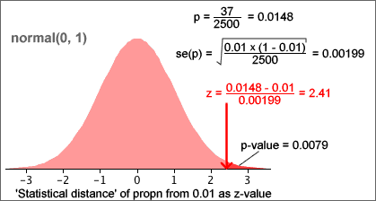

If you don't want to print now,
Inference
Statistical inference refers to statistical techniques for obtaining information about a population parameter (or parameters) from a random sample. There are two branches of inference:
Estimation
Point estimates and confidence intervals give answers to questions of the form:
What parameter values would be consistent with the sample data?
Hypothesis tests
This chapter deals with a related type of question:
Are the sample data consistent with some statement about the parameters?
Errors and strength of evidence
A single random sample can rarely provide enough information about a population parameter to allow us to be sure whether or not any statement (hypothesis) about that parameter will be true. The best we can hope for is an indication of the strength of the evidence against it.
Randomness in sports results
Although we like to think that the 'best' team wins in sports competitions, there is actually considerable variability in the results that can only be explained through randomness. For example when two teams play a series of matches, the same team rarely wins all matches.
English Premier Soccer League, 2008/09
In the English Premier Soccer league, each team plays every other team twice (home and away) during the season. Three points are awarded for a win and one point for a draw. The table below shows the wins, draws, losses and total points for all teams at the end of the 2008/09 season.
Team |
Wins | Draws | Losses | Points | |
|---|---|---|---|---|---|
| 1. 2. 3. 4. 5. 6. 7. 8. 9. 10. 11. 12. 13. 14. 15. 16. 17. 18. 19. 20. |
Manchester_U Liverpool Chelsea Arsenal Everton Aston_Villa Fulham Tottenham West_Ham Manchester_C Wigan Stoke_City Bolton Portsmouth Blackburn Sunderland Hull_City Newcastle Middlesbrough West_Brom_Albion |
28 25 25 20 17 17 14 14 14 15 12 12 11 10 10 9 8 7 7 8 |
6 11 8 12 12 11 11 9 9 5 9 9 8 11 11 9 11 13 11 8 |
4 2 5 6 9 10 13 15 15 18 17 17 19 17 17 20 19 18 20 22 |
90 86 83 72 63 62 53 51 51 50 45 45 41 41 41 36 35 34 32 32 |
Were all teams evenly matched?
A simulation can help us to investigate this question. We could be used to generate results from all 380 matches in the season for evenly matched teams, each result having probabilities 0.372, 0.372 and 0.255 of being a win, loss or draw for the home team. (A proportion 0.255 of games in the actual league resulted in draws.)
If there are differences between teams, we would expect the worst teams to have very few points at the end of the season and the best to have many. On the other hand, for evenly matched teams, we would expect all 20 finals points to be similar. The spread of final points in the league table should tell us something about whether the teams are evenly matched.
In the actual league table, the standard deviation of the final points for the 20 teams was 18.236. The diagram below shows the standard deviations in 200 simulated league tables with evenly matched teams.
Since the probabilities in one tail of the distribution are added, this is called a one-tailed test.
P-value for a two-tailed test
If the alternative hypothesis allows either high or low values of x, the test is called a two-tailed test,
H0 : π = π0
HA : π ≠ π0
The p-value is then double the smaller tail probability since values of x in both tails of the binomial distribution would provide evidence for HA.
Example
In a population of people, a proportion 0.574 have blood group O. In a sub-group of this population, a sample of 54 individuals were tested and 26 of these had blood group O. Is there any evidence that they differ from the main population?
This question can be expressed with the hypotheses
H0 : π = 0.574
HA : π ≠ 0.574
If the sub-group had the same proportion with blood group O as the main population, the number out of 54 with this blood group would have the binomial distribution below.

Approximate p-value
We again test the hypotheses
H0 : π = π0
HA : π < π0
If n is large, the approximate normal distribution for x can be used to obtain the p-value for the test.

Adverse reactions to drug
A pharmaceutical company claims that only 1% of a drug's users experience adverse reactions. An agency monitors 2500 patients taking the drug and observes adverse reactions in 37 cases. Is the occurrence of adverse reactions more common than claimed by the company?
H0 : π = 0.01
HA : π > 0.01
where π = P(adverse effect).

with a standard normal distribution. Since x is discrete,
P(X ≥ 37) = P(X ≤ 36.5) = P(X ≤ 36.9) = ...
To find this tail probability, any value of x between 36 and 37 might have been used when evaluating the z-score. The p-value can be more accurately estimate by using 36.5. This is called a continuity correction. This more accurate p-value in the above example is 0.011 leading to a similar conclusion.
The continuity correction involves either adding or subtracting 0.5 from the observed count, x, before finding the z-score.
Difference between parameter and estimate
If the value of a parameter specified by the null hypothesis (e.g. a population proportion, π0) is close to the corresponding sample statistic (e.g. the sample proportion, p) then there is no reason to doubt the null hypothesis. However if they are far apart, the data are not consistent with the null hypothesis and we should conclude that the alternative hypothesis holds.
A large distance between the estimate and hypothesized value gives evidence against the null hypothesis.
Statistical distance
To help assess this difference, we express it as a number of standard errors since we know from the 70-95-100 rule of thumb that that 2 (standard errors) is a large distance, 3 is a very large distance, and 1 is not much.
For a proportion, the number of standard errors is

In general, the statistical distance of an estimate to a hypothesised value of the underlying parameter is

Values more than 2, or less than -2, suggests that the hypothesized value is wrong. However if z is close to zero, p is reasonably close to π0 and we should not doubt the null hypothesis.
Test statistic and p-value
The statistical distance of an estimate to a hypothesised value of the underlying parameter is

If the null hypothesis holds, z has approximately a standard normal distribution and it can be used as a test statistic for tests about the parameter. The p-value can be determined from the tail areas of this standard normal distribution.

For a two-tailed test, the p-value is the red tail area and can be looked up using either normal tables or in Excel.
Example
We again examine a data set in which a proportion 37/2500 = 0.0148 of 2,500 patients had adverse reactions to a drug. Do more than 1% of such patients have adverse reactions?
H0 : π = 0.01
HA : π > 0.01
The diagram below shows how the 'statistical distance' of the sample proportion from 0.01 is calculated.

The p-value for the test is the upper tail area of the standard normal distribution and is 0.0079 here, so we again conclude that there is strong evidence that more than 1% of patients have adverse reactions from the drug.
Using a 'statistical distance' to test a proportion gives a p-value that is identical to the p-value based on a normal approximation to the number of successes without a continuity correction. (The p-value is slightly different if a continuity correction is used.) However this approach will be used to test many different kinds of parameter in later sections.
(The procedure will be refined slightly when applied to situations where the standard error of the estimate must itself be estimated from the sample data. A t distribution will be used instead of a standard normal distribution.)